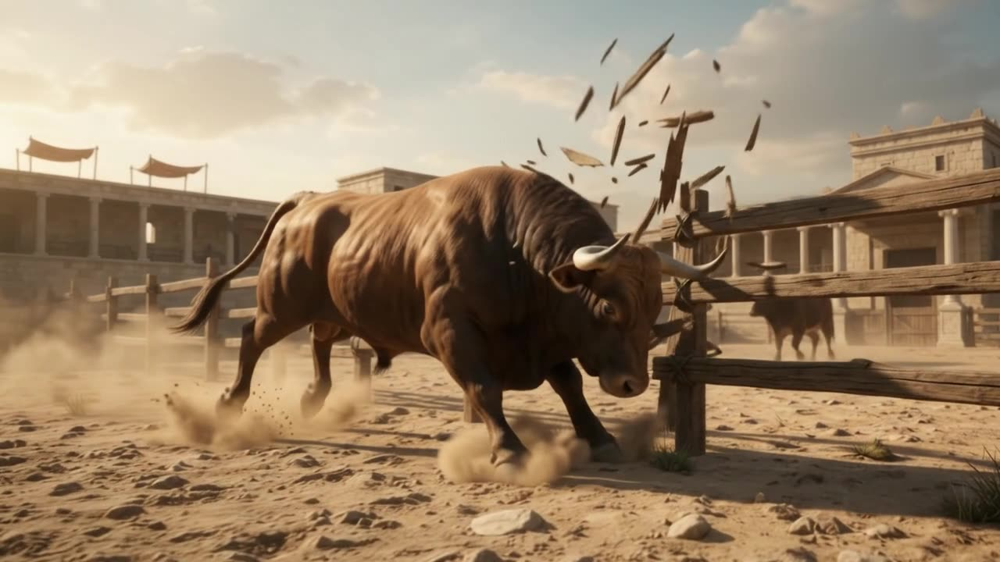

📖
פשיטא
ארבעה אבות
״אבות נזיקין״
״השור, הבור, המבעה וההבער״
״לא הרי השור כהרי המבעה״
״גבי שבת תנן״
״ומאי איכא בין אב לתולדה״
״גבי טומאות תנן״
״ת"ר: ג' אבות נאמרו בשור״
״קרן מנלן״
״תולדה דקרן״
״מאי שנא נגיחה״
״מאי שנא גבי אדם״
״מועד לבהמה״
התחברות
התנתקות

כניסה לשיעור
דף ב, עמוד ב · שלושת השיעורים האחרונים